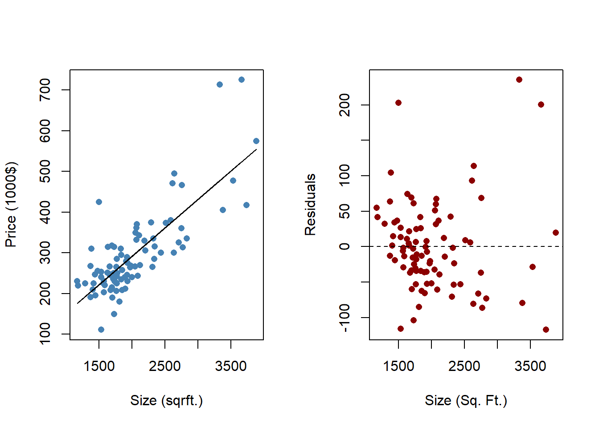

7.2 Application: Predicting House Price Based on House Size
Let’s consider an application where we attempt to explain the price of a house (in thousand US$) by the size of a house (in square feet). We start by establishing the theory and relating it to our statistical terminology.
The Population Regression Function:
\[price_i = \beta_0 + \beta_i \; sqrft_i + \varepsilon_i\]
\(price_i\) is the dependent variable (\(Y_i\))
\(sqrft_i\) is the independent variable (\(X_i\))
The equation above is the true (but unknown), population regression function.
The coefficients (\(\beta_0\) and \(\beta_1\)) are the population regression coefficients!
They are the coefficients you would obtain if you had every possible observation (i.e., the population)
This ain’t gonna happen…
We need to obtain the estimated, sample regression coefficients. To do this, we need to collect a sample of observations.
The Sample
In order to obtain sample estimates of our regression model above, we must obtain a sample of observations. We collect a (random) sample of size \(n\). This is where the subscript i comes in - indicating that in general, each individual observation can be identified as \(i=1,...,n\). The sample estimates are based on the sample.
Hypothetically, we can obtain different estimated coefficients for every different sample… but we will address that later.
To facilitate this application, we will use a data set internal to R, called hprice1.22
## [1] "assess" "bdrms" "colonial" "lassess" "llotsize" "lotsize"
## [7] "lprice" "lsqrft" "price" "sqrft"This data set contains 88 observations of homes where each home has 10 pieces of information called variables. We are only concerned with two variables at the moment - the house price (price) and the house size (sqrft).
## Min. 1st Qu. Median Mean 3rd Qu. Max.
## 111.0 230.0 265.5 293.5 326.2 725.0## Min. 1st Qu. Median Mean 3rd Qu. Max.
## 1171 1660 1845 2014 2227 3880We know that:23
the average house price is $293,500
50% of the observations are between the 1st and 3rd quartiles of $230,000 and $326,200
the minimum house price in the sample is $111,000
the maximum house price in the sample is $725,000. You can look at the summary output for the size variable and make similar statements.
The Sample Regression Function
We combine our Population Regression Function (PRF) and our data sample to estimate a Sample Regression Function (SRF).
\[price_i=\hat{\beta}_0+\hat{\beta}_1 \; sqrft_i+e_i\]
The difference between the SRF and the PRF are very important.
The PRF coefficients are population parameters while the SRF coefficients are sample statistics. In other words, the SRF coefficients are actual numbers that correspond to our sample, and we use them to draw inference on the things we really want to talk about - the PRF coefficients.24
The difference between the SRF residual \((e_i)\) and the PRF residual \((\varepsilon_i)\) is along the same lines as the difference between the SRF and PRF coefficients. The SRF residual contains the unexplained variability of the dependent variable in the sample while the PRF residual theoretically contains the unexplained variability in the population.
We will get into the details about how these regression estimates can be obtained later. Right now, lets just arrive at our estimates and shed light on the big picture.
## (Intercept) sqrft
## 11.204145 0.140211Our regression estimates are \(\hat{\beta}_0=11.2\) and \(\hat{\beta}_1=0.14\). This delivers a prediction equation from our SRF as:
\[\widehat{price}_i=11.2+0.14 \; sqrft_i\]
Where \(\hat{Y}_i=\widehat{price}_i\) is the expected house price conditional on a particular size.
We can illustrate the results of the regression as follows:
par(mfrow = c(1,2))
plot(hprice1$sqrft, hprice1$price,
pch = 16, col = "steelblue",
xlab = "Size (sqrft.)",
ylab = "Price (1000$)")
lines(hprice1$sqrft,fitted(REG),col = 'black')
plot(hprice1$sqrft,residuals(REG),
pch = 16, col = "darkred",
xlab = "Size (Sq. Ft.)",
ylab = "Residuals")
abline(h = 0,lty = "dashed")
In the left figure, the dots are a scatter-plot of the actual observations of house price (Y) and house size (X) while the blue line is our estimated regression delivering the expected house price \((\widehat{price}_i)\) for each observation of house size. Note that every time an actual house price is different than the expected value from the regression \((price_i - \widehat{price}_i)\) - then that difference is considered unexpected and ends up in the garbage can (residual). The residual values are illustrated in the right figure. Note that the residual values are centered around the zero line - this means that the unexpected component of house price is equal to zero on average. This zero average forecast error is not by accident, it is how the coefficients are mathematically determined (see the section on Ordinary Least Squares for details).
Analysis of the SRF
We can get plenty of mileage out of our estimated SRF.
We can interpret the estimated coefficients (one at a time) to get a sense of how house size influences house price.
\(\hat{\beta}_0=11.2\) is the estimated intercept term. Mathematically, it is the expected value of the dependent variable conditional on the independent variable being 0 \((E[Y_i|X_i=0]=11.2)\). In the context of this problem, we are saying that the expected price of a house that has 0 square feet in size is 11.2 thousand dollars. If that sounds funny to you… it should. The take away is that an intercept term always has a mathematical interpretation, but it might not always make sense. The key is if an independent value of zero (i.e., \(X=0\)) makes sense.
\(\hat{\beta}_1=0.14\) is the estimated slope term. Mathematically, it is the expected change in value of the dependent variable given a unit-increase in the independent variable \((\Delta Y_i/\Delta X_i=0.14)\). In the context of this problem, we are saying that the expected price of a house will increase by 0.14 thousand dollars ($140) for every (square-foot) increase in house size. If you were a realtor, you can now state that somebody looking for a home would be paying $140 per square foot of house size on average.
We can use the model for forecasting purposes.
To illustrate a forecast, suppose you came across a 1,800 square-foot house with a selling price of $250,000. Does this seem like a fair price? In order to answer this question with our estimated results, we simply plug 1800 square-feet as a value for our independent variable and arrive at an expected price conditional on this house size.
\[\widehat{price}_i=11.2+0.14(1800)=263.6\]
## [1] 263.5839Our regression forecast states that an 1,800 square-foot house should have an average price of $263,000. Since this is more than the $250,000 of the house in question, then the regression model suggests that this price is below average, and is a decent price based on the size of the house.25
Discussion
While our model appears useful, we must always be mindful of its limitations. For starters, our regression assumes that house size is the only thing that matters when predicting house price. Our candidate house in the exercise above is more than $10,000 below the average 1,800 square-foot house price in the sample, but this might be due to very relevant things that our model considers unpredictable.
Is the house located next to the town dump?
Is the house built on top of an ancient burial ground?
Does it have a really ugly kitchen?
Does the roof leak?
The bottom line is that one should always view our regression estimates within the lens of its limitations. This isn’t to say that the estimates are incorrect or wrong, because they are actually quite useful. However, understanding how far one can take regression results is important.
Note that this data is found in a package called wooldridge. You should have installed this package back in Chapter 3. Refer to that chapter if you need to reinstall the package.↩︎
We covered the summary of a single variable in Chapter 1.↩︎
Think of this along the lines of our univariate analyses earlier in the companion: \(\mu\) is the population parameter while \(\bar{X}\) is the sample statistic.↩︎
Of course, there might be something wrong with the house that size isn’t accounting for.↩︎